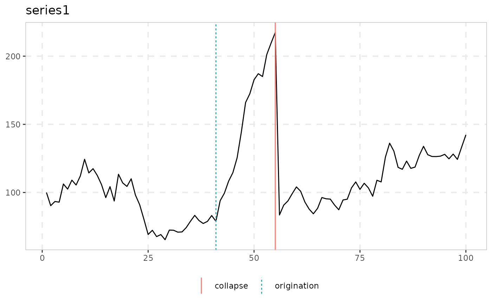
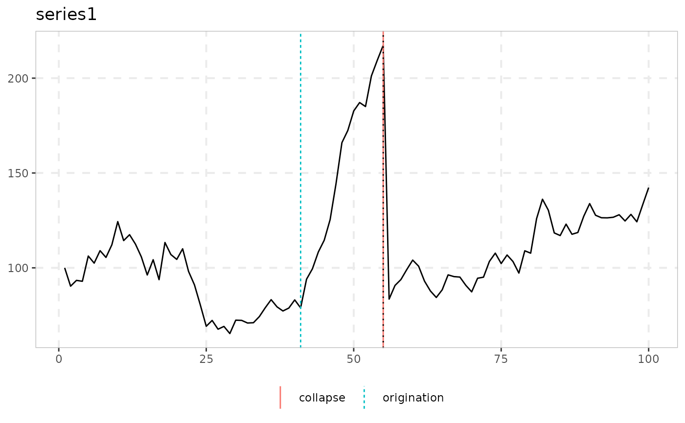

dating_knp dates bubble episodes (origination and collapse) by minimizing
a sum of squared residuals that is corrected by omitting a residual. The model
has alternating regimes: a unit root, an explosive regime, and a unit root that
resumes from a shifted level after an instantaneous collapse, and so on. Plain
OLS over this model is provably inconsistent, because the estimate of the
origination date converges to the true collapse date and not to the
origination date. The default omit = TRUE fixes this by dropping the
squared residual at each candidate collapse date from the objective before
minimizing.
Arguments
- data
A univariate or multivariate numeric time series object, a numeric vector or matrix, or a data.frame. A column may have leading or trailing
NAvalues, which describes an unbalanced panel in which series enter or exit the sample at different times. Those periods are filled withNAinbadfandbsadfand excluded from theadf,sadfandgsadfof that series. InteriorNAvalues (a gap in the middle of a series) are not supported. When any series is padded in this way, the panel statistics (bsadf_panelandgsadf_panel) are not available, and the function returnsNAfor them with a warning.- trim
Minimum fraction of the (differenced) sample required in each regime (default 0.05).
- omit
Use the consistency-restoring correction of Kejriwal, Nguyen & Perron (default
TRUE).FALSEgives the plain OLS estimator, which is provably inconsistent (their Theorem 1). It is kept mainly to demonstrate the effect of the correction and not for practical dating.- breaks
Number of break dates (the paper's
m), two for each bubble. An odd number lets the last bubble run to the end of the sample, and its collapse is thenNA.
Value
An object of class dating_knp_obj: a list with origination
and collapse (dates) and delta (the fitted explosive AR
coefficient). For a single bubble these are named vectors with one value for each
series, and for more bubbles they are matrices with one row for each bubble and
one column for each series.
Details
breaks = 2 (the default) is the single-bubble model. More breaks use the
dynamic-programming algorithm of Kejriwal, Nguyen & Perron, which returns the
exact global minimizer of the objective in O(breaks * n^2). As in the
paper, the number of breaks is taken as given, for example two for each episode
that datestamp finds.
Note
This is a model-selection dating procedure based on the residual sum of squares and not a hypothesis test, so it needs no critical values.
The function returns its own class and not radf_obj, so it does not work
with summary(), \link{datestamp} and tidy. It has its own print() and
autoplot() methods instead. print() shows the dating table (model, origination, collapse, recovery). See
vignette("naming-and-analysis", package = "exuber") for which functions fit
the shared pipeline and which do not.
![[Experimental]](figures/lifecycle-experimental.svg)
References
Kejriwal, M., Nguyen, L., & Perron, P. (2025). An improved procedure for retrospectively dating the emergence and collapse of bubbles. Journal of Time Series Analysis, 46(5), 867-883.
See also
dating_hls and dating_pdc for related
SSR-based dating approaches.
Other dating:
dating_hls(),
dating_hlw(),
dating_pdc(),
radf_recovery(),
rootstamp()
Examples
# \donttest{
res <- dating_knp(sim_data$psy1, trim = 0.05)
print(res)
#>
#> ── dating_knp (n = 100, trim = 0.05, omit = TRUE, breaks = 2 ───────────────────
#>
#> series bubble origination collapse delta
#> series1 1 41 55 0.964
#>
autoplot(res)

# Compare the bias-corrected estimate with the plain (inconsistent) OLS one,
# adding an extra reference line to the output of autoplot()
res_plain <- dating_knp(sim_data$psy1, trim = 0.05, omit = FALSE)
autoplot(res) +
ggplot2::geom_vline(xintercept = as.numeric(res_plain$origination), linetype = 3)

# Two bubbles
dating_knp(sim_data$psy2, breaks = 4)
#>
#> ── dating_knp (n = 100, trim = 0.05, omit = TRUE, breaks = 4 ───────────────────
#>
#> series bubble origination collapse delta
#> series1 1 18 40 1.074
#> series1 2 59 70 1.066
#>
# }